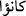

şu açıklamayı yapmaktadır: “...İşte bozgunculuk yaptıklarından ötürü onların azâb
üstüne azâblarını artırdık.” (en-Nahl, 16/88) Mü’minler için ise dünyâda: “Allah,
yola gelenlerin hidâyetini artırır.” (Meryem, 19/76) va‘di, âhırette de “...Lütfundan
onlara daha fazlasını da ihsân eder.” (en-Nûr, 24/38) müjdesi vardır.
el-Kutbu’l-Allâme şöyle demiştir: Kalb hastalıkları, ya bozuk inanç ve küfür gibi
dînî; ya da kin, hased, za’f ve korkaklık gibi kişinin içinde olan ahlâkî konulara âid
şeylerdir. Âyet-i kerîmede maraz böylece önce küfre, sonra fiilî düşüklüklere ve nihâyet
korkaklık gibi içteki kötülüklere hamledilmiştir. “Allah onların marazlarını artırdı.”
(el-Bakara, 2/10) âyetinin münâfıklar için bedduâ olması da mümkündür. Yâni “Allah
onların marazlarını artırsın” mânâsına gelebilir.
Şâyed: “Örfe göre duâ, âciz kimselere mahsûs bir iştir. Allah Teâlâ ise âcizlikten
münezzehtir. O halde bu âyetin münâfıklar için bedduâ olması nasıl mümkün olabilir?”
şeklinde bir soru sorulursa şöyle cevap verilebilir: Allah Teâlâ bu âyetle kullarına
münâfıklar için bedduâ etmelerinin ve onların kendilerinden uzak bulunmalarını
istemelerinin câiz olduğunu öğretmektedir. Çünkü münâfıklar, Allah’ın en kötü
yaratıklarıdır. Allah cehennemin en alt tabakasını onlar için hazırlamıştır. “Allah onları
gebertsin”, “Allah onlara lâ’net etsin” âyetleri de bu kabildendir.
İnanmadıkları halde “inandık” demek sûretiyle yalan söylemelerinden ötürü
münâfıklar için acısı kalblere kadar ulaşan şiddetli azâb vardır. Âyette “kânû” (
)
kelimesi, münâfıkların yalanlarının devamlı tekrarlandığını ve sürekli olduğunu
belirtmek üzere getirilmiştir. Yalanın kötülüğüne ve çirkin bir iş olduğuna işârettir.
Münâfıkların şiddetli azâba uğramalarının, sadece yalan söylemeleri sebebiyle olduğu
izlenimini vermektedir. Çünkü ibârenin zâhirine göre azâba sebeb olarak sadece yalan
söylemeleri zikredilmiştir. Halbuki onların yaptıklarını işiten Allah Teâlâ, azâbı birçok
yönden hakettiklerini de bilir. Burada günah olarak sadece yalanlarının zikredilmesi,
yalanın son derece kötü bir iş olduğunu bildirmek ve insanları ondan uzaklaştırmak
içindir.
Yalan, bir şeyi olduğunun aksine haber vermektir. Bu ise tümüyle büyük bir kötülük,
hoşa gitmeyen bir iştir. “İbrâhîm (a.s.)’ın üç kez yalan söylediği rivâyet
olunmuştur.”[201] Ama bunlar söyleyiş tarzı bakımından yalana benziyor. Bu tür yalan
bâzı şeyleri üstü kapalı olarak açıklamak şeklinde olur. Fakat şekil itibâriyle yalana
benzediği için bu isim verilmiştir.
O’nun yalan gibi görünen beyânlarından birincisi hasta olmadığı halde: “Ben
hastayım” (es-Sâffât, 37/89) demesidir. İbrâhîm (a.s.)’ın böyle demekten maksadı,
müşriklerin yıldızları ilâh edinmelerine kızgınlığından ötürü hasta olacağını veya
öleceğini ifâde etmektir. Böyle demekle müşrikleri, kendisini yanlarında bayramlarına
götürmekten vazgeçirmek ve bu sûretle putlarla başbaşa kalıp onları kırmak istemiştir.
İkincisi, Hz. İbrâhîm (a.s.)’ın “Hayır, (büyük putu göstererek) işte bu büyükleri